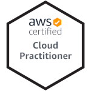

andrew babcock
Software Developer
Contact Info
- (321)-289-5134
- ababcock013@outlook.com
- ababcock013.github.com
- andrew-babcock-011
- 19 SE 140th Rd Warrensburg MO
Skills
-
html/css
-
Javascript
-
python
-
c#/.net
-
aws cloud
-
c++
-
django
-
mern stack
certifications
- 
projects
-
-Coin Skunk-
-
A Django crypto currency tracking app that provides users with up to date price information on hundreds of different coins.
- Coin Skunk Git Repo
-
-AWS resume chalenge-
-
This website is hosted on AWS cloud infrastructure using a range of technologies and was created as a project to further my AWS skills.
Check out the original idea and blog post at: https://forrestbrazeal.com/
visitors
About Me
I am an American soldier....
But when I'm not, I am a problem solver, a go-getter, a peace maker and a knowledge seeker. Since I can remember I have always tried to figure out how things work. My mother stopped buying me toys when I was young because I would take them apart to see what's inside. Now, I take apart ( and put back together ) big toys that belong to the military. If it moves, I fix it! I have been apart of a team that helps our warfighters stay in the fight by providing them with world class equipment maintenance and repair for well over a decade. I'm proud of what I do for my fellow soldiers and airmen of this great nation and will always find a way to continue to serve them in any capacity I can.
But I'm not just a gear head I'm a tech enthusiast as well. I started studying programming in the early 90's with BASIC. Then moved on to C/C++. I remember when Java came out and all the hype around it! Write once, run anywhere they said! I have and will always have a deep interest in programing but only until recently could I devote more attention to it.
When I'm not working on Humvees or cargo loaders I'm spending my time to study the art and science of programing.
My current languages are: C++, C#, JavaScript(HTML/CSS), Python,
My current frameworks I've used include: ASP.Net, Bootstrap, Django, DotNet, Node.js
And just for fun I also dabble in Unity and Unreal Engines.
Experience
Us department of defense
2004 - present
lead vehicle mechanic
- Manages and organize the service and repair of military and civilian vehicles and equipment.
- Leads teams of 2-8 on a vast array of time sensitive, mission critical equipment repairs both at home and on overseas contingency operations abroad.
- Utilizes work-breakdown structure to ensure on-time project completion and proper resource allocation.
- Maintains vehicle and equipment fleets worth upwards on $20 million.
army national guard
2020 - present
artillery cannon crewmember 13b
- Serves on a M777A2 howitzer as a team member in various roles.
- Loads and fires howitzers.
- Assist section chief in supervision of howitzer operations, maintenance, and training.
- Use computer-generated fire direction data to set elevation of cannon tubes for loading and firing.
- Participate in reconnaissance operations to include security operations and position preparation.
Operate in reduced visibility environments with infrared and starlight enhancing night vision devices and other equipment.
us air force
1999 - 2003
Logistics Management Specialist
- Was responsible for planning, managing and the coordination of the total cradle-to-grave life cycle logistics for an assigned system or subsystems, integrating separate functions of supply, maintenance, procurement and quality assurance of logistics activities needed to sustain system fielding.
- Directed, developed and performed logistics management operations that involve planning, coordinating, and evaluating logistical actions that supported a specified mission, weapons system or designated program.
- Gathered facts and developed appropriate solutions to problems that require command attention due to their critical nature and are of high visibility.
- Collaborated and planed with various appropriate personnel to coordinate and integrate operations and interests of other organizations.
- Performed periodic independent systems evaluations and develop recommendations for system improvements after performing thorough studies and analysis.
Education
pdx code guild
2020 - 2021
full stack web development
- Studied and applied programing concepts such as functions, classes, objects, recursion, OOPS and more to solve given problems throughout the course.
- Completed labs that reinforced skills learned and also taught new ones for future use.
- Participated in group coding sessions and used prior coding experience to assist fellow students in more advanced topics.
- Completed and presented capstone project before an audience of both peers and instructors. Described methodology and technology used and why it was the appropriate solution for the problem.
art institute of tucson
2012 - 2014
digital photography
- Majored in digital photography and digital image manipulation for a wide variety of applications including commercial and fine art.
- Used equipment and computer systems that specialized in the capture and productions of still imagery, video and sound.
- Held meetings with clients to assess their needs and produced photos and or videos that met their requirements.
- Created static and interactive web sites to advertise services and display work for academic projects.
us army nco academy
2005
Noncommissioned Officer
- Learned and further developed skills that assisted my career as a soldier.
- Instilled discipline and real world lessons learned to better me as an effective leader at the squad and team level.
- Prepared and conducted training with fellow class members to learn the basics of taking care and leading solders.
- Inspired fellow soldiers to be creative problem-solvers, physically fit, resilient and grounded in Army Values and the Warrior Ethos.